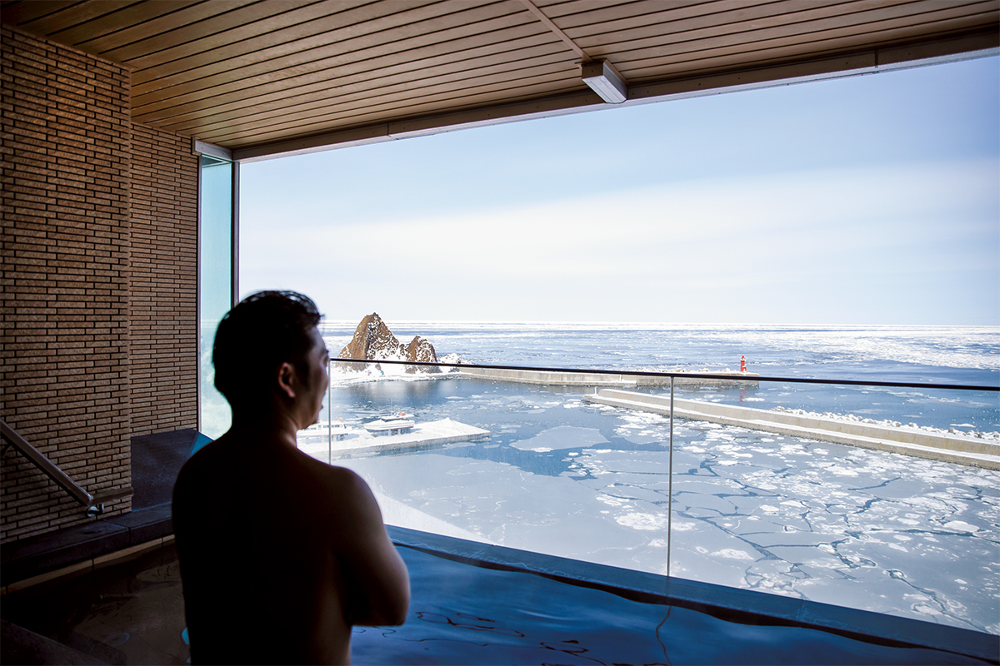
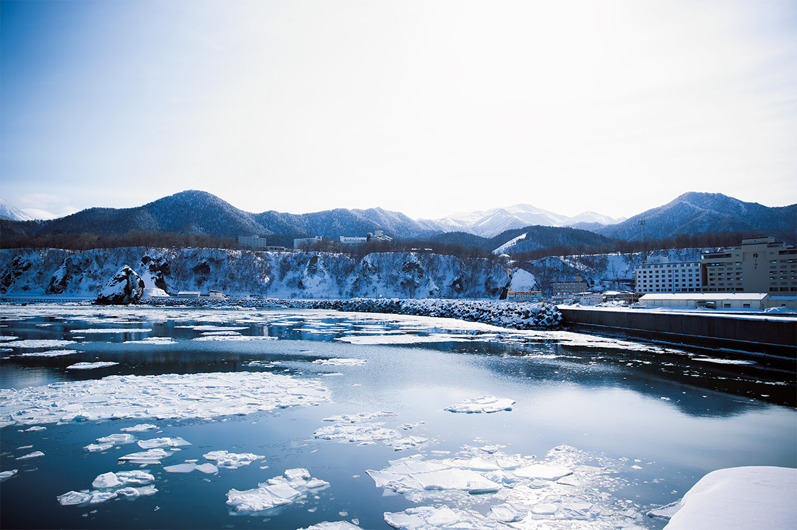
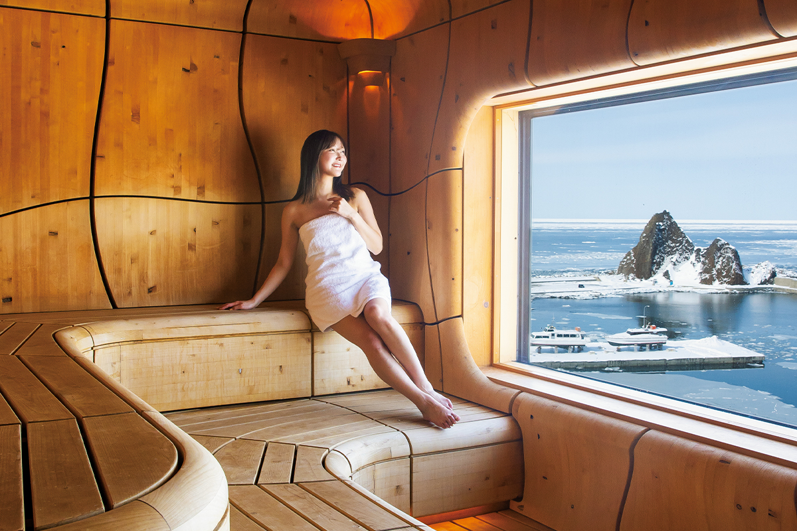
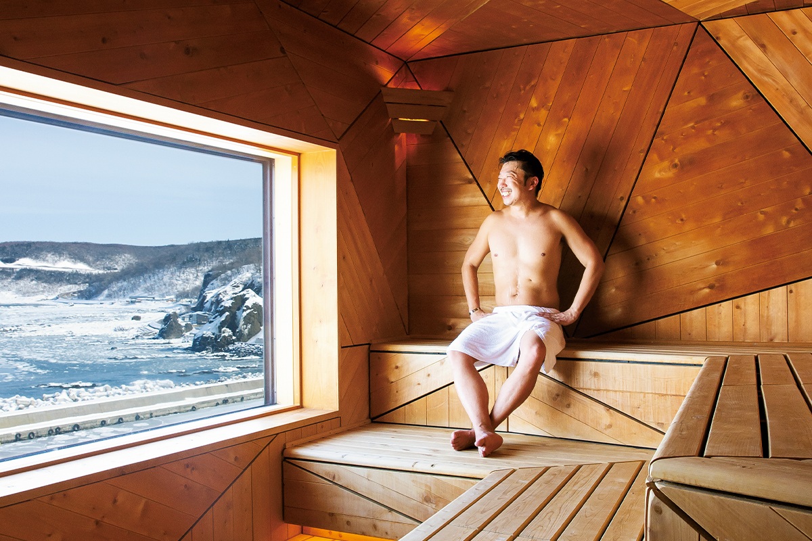
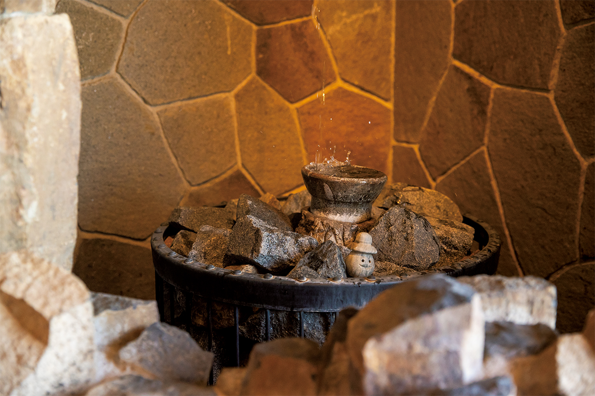
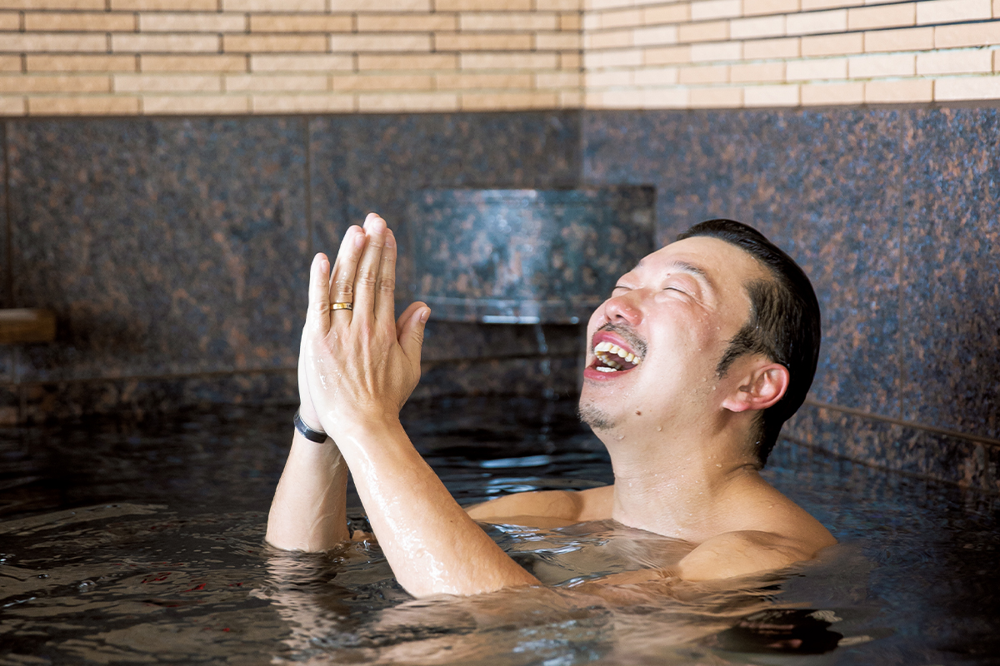
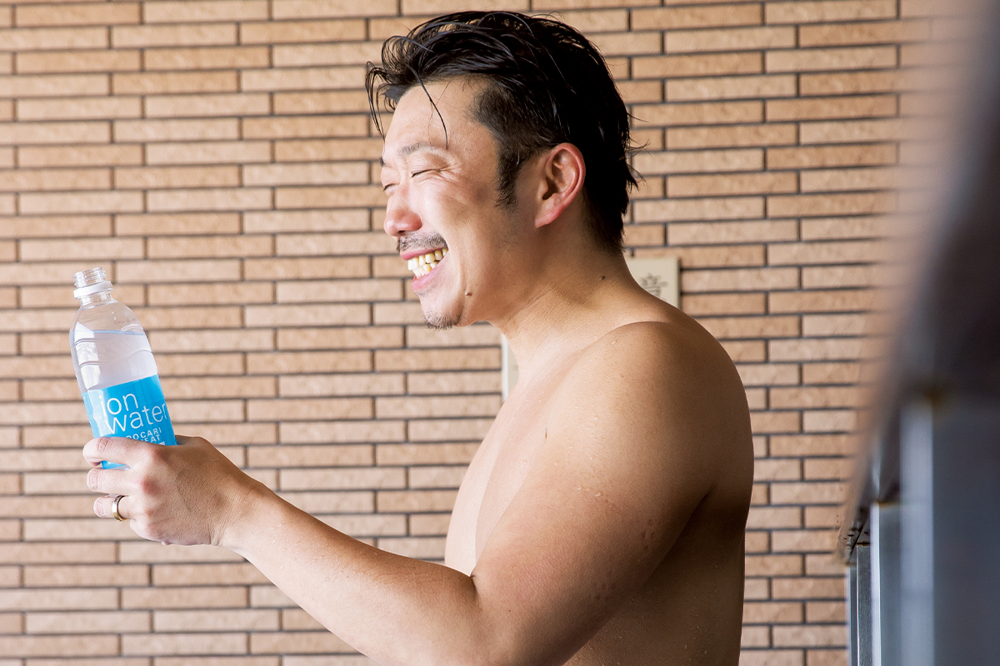
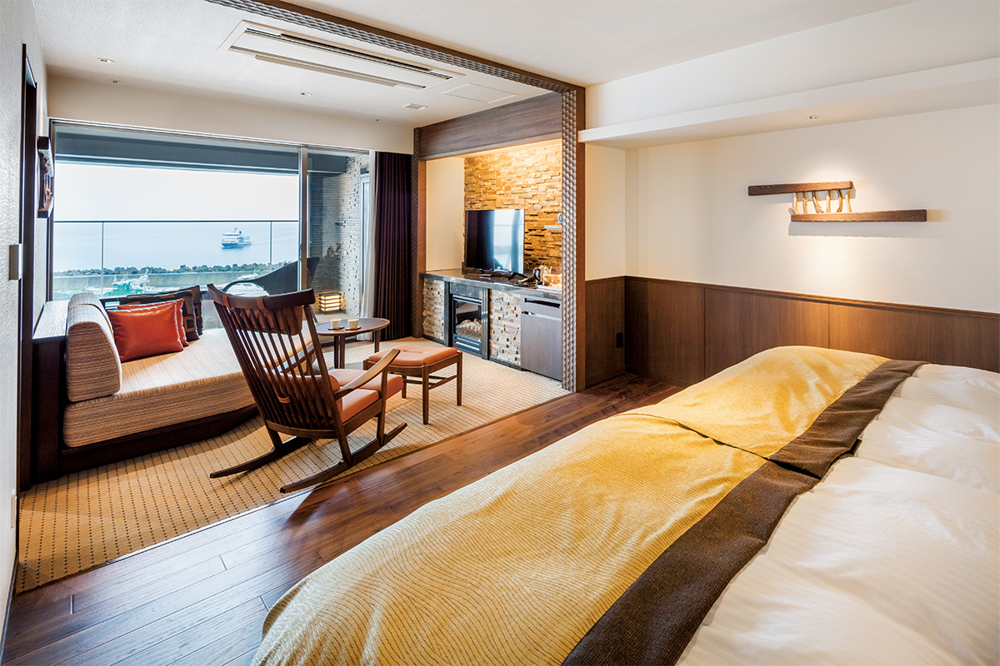
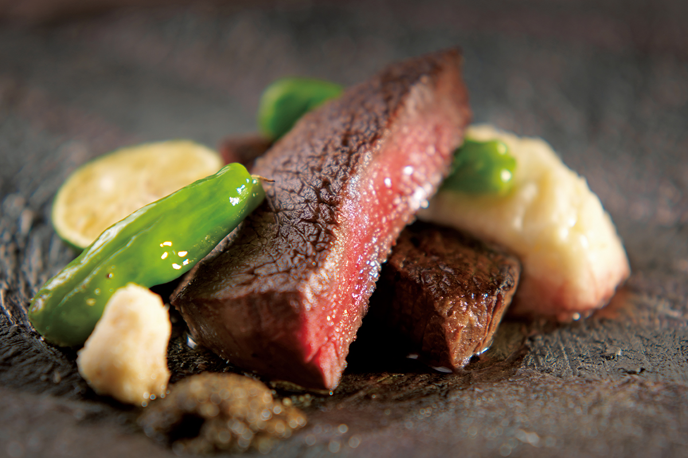

Префектура Хоккайдо · Сиретоко, Уторо · сауна и кухня
KITAKOBUSHI SHIRETOKO Hotel & Resort: сауна с видом на дрейфующий лёд Сиретоко

Сауна в Японии давно стала частью массовой культуры, и ради хорошей парной люди готовы ехать через всю страну. В отеле на полуострове Сиретоко парятся, глядя на льдины Охотского моря, а потом ужинают олениной с соседней фермы.
Место
Сиретоко: там, где кончается земля
Полуостров Сиретоко выдаётся в Охотское море на востоке Хоккайдо. Он тянется примерно на 70 км и делится между двумя посёлками, Сяри и Раусу. Западный берег смотрит на Охотское море, восточный на пролив Нэмуро. Южнее Сиретоко дрейфующий лёд в Северном полушарии к берегу уже не подходит.

Во льду много питательных веществ. Весной он тает, и в воде бурно размножается планктон. Им кормятся мелкая рыба, ракообразные и моллюски, их едят крупные рыбы и тюлени. Лосось и горбуша поднимаются по рекам на нерест и становятся пищей для бурых медведей, лисиц и рыбных филинов в лесу. Эту связь моря, рек и суши, редких животных и растений вроде орлана-белохвоста и сиретокской фиалки, а также то, как люди здесь берегут природу, оценили в ЮНЕСКО: в 2005 году Сиретоко внесли в список Всемирного природного наследия. О природе полуострова подробнее рассказывает отдельная статья.
Название, как считается, происходит от айнского слова «сириэтоку», «край земли». Ради этих видов сюда едут путешественники из Японии и из-за границы, а один из лучших видов на наследие открывается из отеля KITAKOBUSHI SHIRETOKO Hotel & Resort в посёлке Уторо. Отель работает с 1960 года и славится гостеприимством, природным онсэном и северной кухней. В 2021 году здесь полностью переделали сауну, и о ней заговорили по всей стране.
Сауна
Две парные: пещера и льдина
Купальни отеля давно известны. В открытой купальне на верхнем этаже кажется, что сидишь прямо в Охотском море. Сауны при них перестраивали под руководством продюсера саун, которого в Японии прозвали «мастером тотоноу». Тотоноу японские любители саун называют состояние ясности и покоя, которое приходит после нескольких кругов «парная, холодная вода, отдых на воздухе».
«Мы хотели, чтобы вся сауна целиком передавала природу Сиретоко. Такой сауны в Японии ещё не было»
продюсер саун
Это понимаешь, едва войдя в UNEUNA. Из широкого окна видно ледяное поле до самого горизонта, чистое, без единого пятна. Перед этой картиной на мгновение забываешь дышать.

UNEUNA задумана как пещера в лесу Сиретоко: стены и скамьи плавно изгибаются, будто волны. Такое пространство удалось построить благодаря мастерской, одной из немногих в Японии, что умеют обрабатывать дерево на 3D-станках.
KAKUUNA устроена наоборот. Её прямые и резкие линии напоминают мощные льдины. Стены вокруг печи выложены шестигранным камнем и повторяют столбчатую отдельность, рисунок трещин в застывшей лаве.


Телевизора в парных нет. Закрываешь глаза, потеешь и слушаешь птиц в небе Сиретоко и скрип льдин, которые теснят друг друга. Эту запись сделал музыкант: он импровизировал прямо на полуострове вместе со звуками природы. Вид, архитектура, материалы и даже звук передают размах и таинственность Сиретоко, и ради одной этой сауны стоит проделать долгую дорогу.


С 27 марта 2023 года отель больше не пускает в купальни гостей без ночёвки, так что сауна открыта только для тех, кто остаётся на ночь.
Номера и ужин
Клубный этаж Okhotsk Club
Сюрпризы на этом не кончаются. В феврале 2022 года на роскошном клубном этаже Okhotsk Club, где 30 номеров, появились два люкса с собственной сауной. В них есть открытая купальня, сауна, бассейн с холодной водой и место для отдыха на воздухе, и в 2022 году их бронировали нарасхват.

После сауны хорошо просто посидеть в номере Okhotsk Club. Камин и дерево сахалинской пихты делают его тёплым, и время здесь течёт неспешно. Когда закат над морем догорит, ждёт ужин в ресторане Grill Shiretoko. В основе меню хорошее мясо оленя с местной фермы «Сиретоко Эдзосика», к нему подают овощи округи и свежие морепродукты. Курс подают в собственном стиле ресторана, и он занимает все пять чувств. В 2026 году ресторан принимает только гостей двух видов люксов клубного этажа.

Сауна с видом на лёд, кухня и номера, в которых тоже чувствуешь Сиретоко: в этом отеле хорошо видно, за чем японцы ездят в сауна-путешествия.
KITAKOBUSHI SHIRETOKO Hotel & Resort
- Адрес
- префектура Хоккайдо, уезд Сяри, Сяри, Уторо-Хигаси, 172
- Телефон
- +81 152-24-3222 (по будням 10:00–18:00)
- Цены / Вход
- ночь с завтраком и ужином от 17 670 иен (включая сервисный сбор, без налога и курортного сбора)
- Номера
- 178, из них 30 на клубном этаже Okhotsk Club в западном корпусе
- Заезд / выезд
- 15:00 / 10:00
- Часы работы
- сауны для гостей отеля: KAKUUNA 15:00–24:00 для женщин, 5:00–9:30 для мужчин; UNEUNA 15:00–24:00 для мужчин, 5:00–9:30 для женщин. Сухая сауна на 10 человек, 90 °C, бассейн около 15 °C глубиной 90 см
- Сайт
- shiretoko.co.jp
Фото: Акио Накамура.